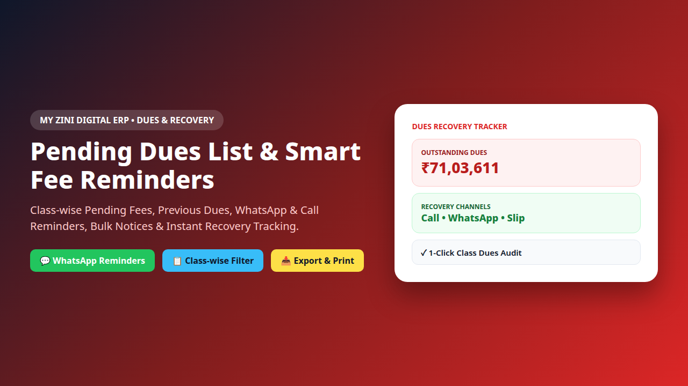
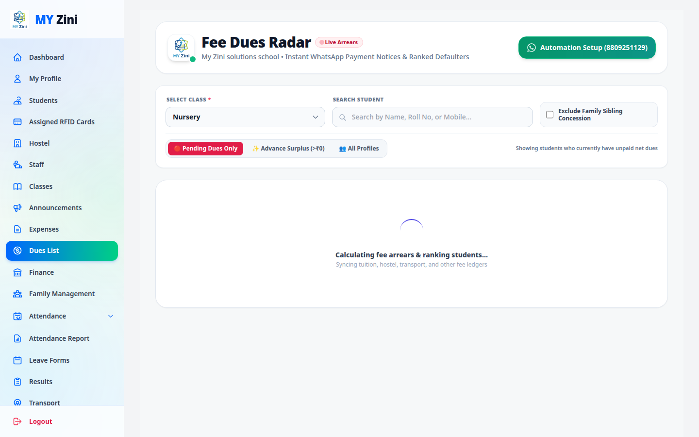
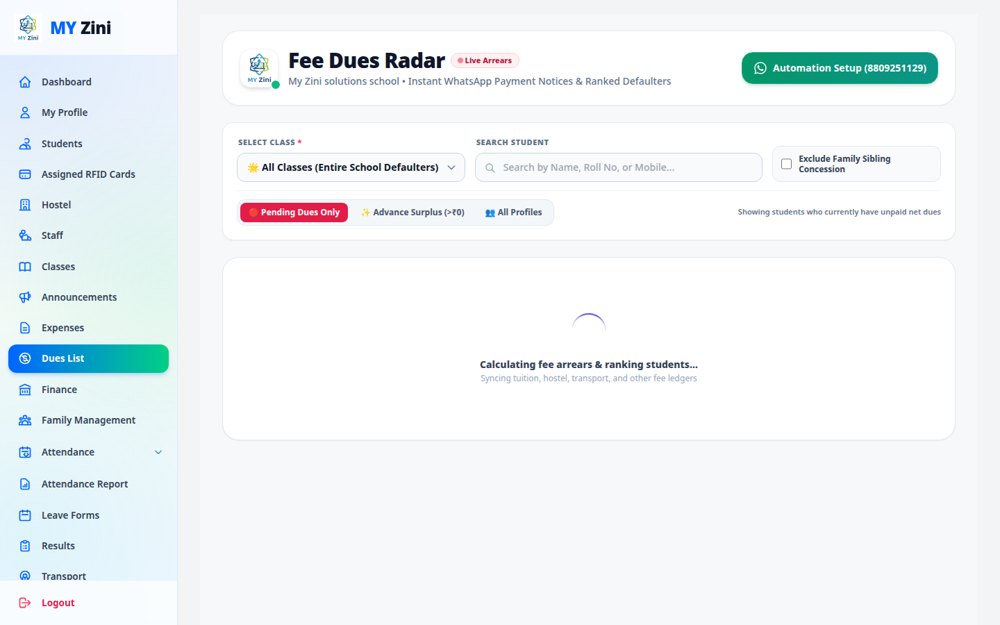
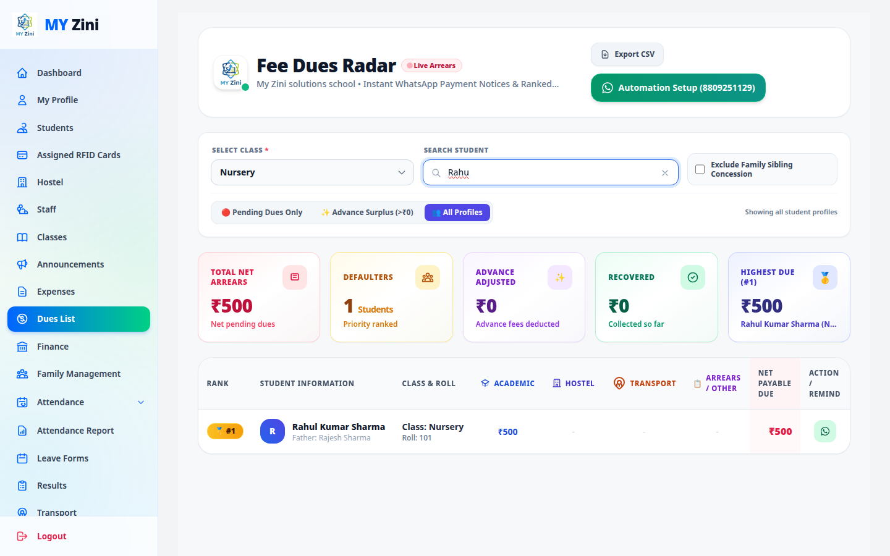
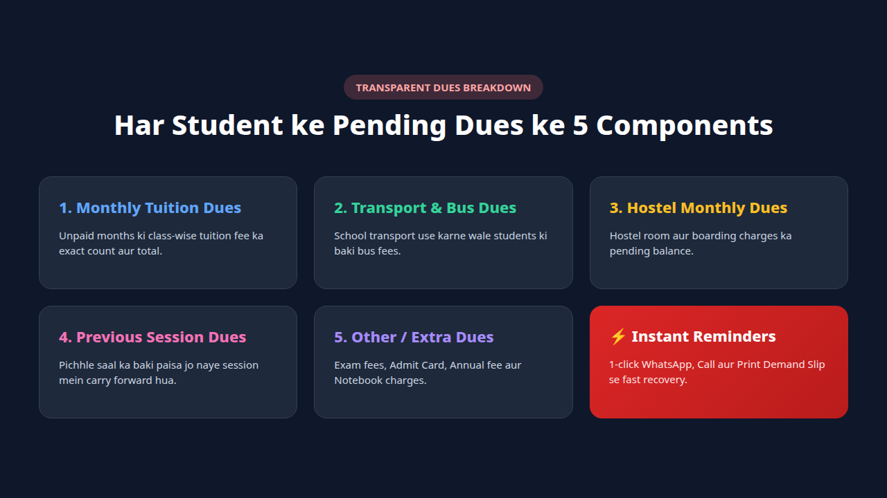
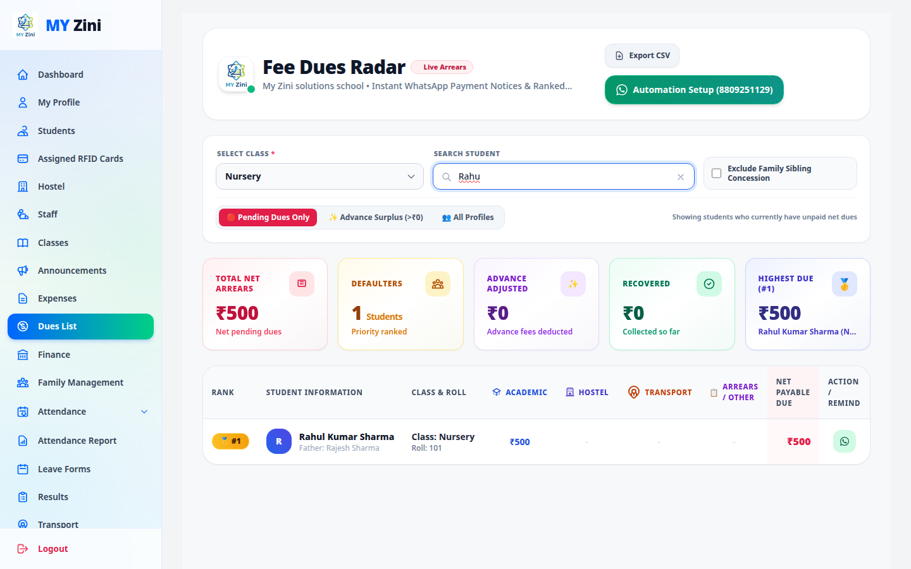
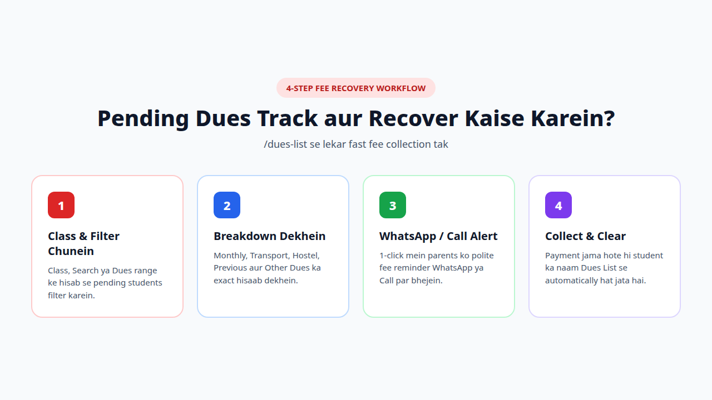
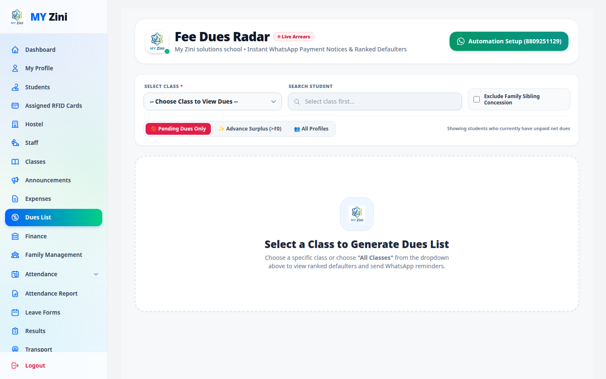
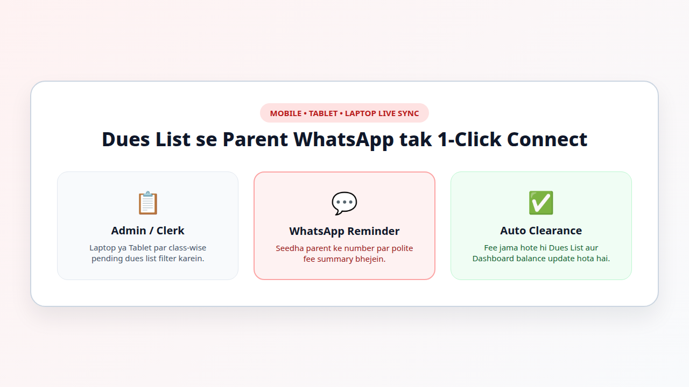

My Zini Digital ERP mein Pending Dues List (Fee Dues Radar) aur WhatsApp Reminders Kaise Use Karein? (Complete Hinglish Guide)
Quick Summary (TL;DR — AI & Reader Overview)
My Zini Digital ERP (https://myzini.digitalerp.shop/dues-list) ka Fee Dues Radar (Live Arrears) module school ke baki paison (pending fees) ko track aur recover karne ke liye banaya gaya hai. Isme aapko 🌟 All Classes (Entire School Defaulters) ya single-class filter, SEARCH STUDENT, Exclude Family Sibling Concession toggle, 3 Profile Pills (🔴 Pending Dues Only, ✨ Advance Surplus (>₹0), 👥 All Profiles), TOTAL NET ARREARS / DEFAULTERS / ADVANCE ADJUSTED cards, Automation Setup (WhatsApp reminders), aur 1-click Export CSV jaise sabhi tools milte hain.

1. Fee Dues Radar (/dues-list) Open Karna aur Initial Screen
Pending fees list dekhne ke liye aap left sidebar mein Dues List par click karein ya Dashboard ke Quick Actions mein Dues List button dabaein. Open hote hi top par aapko Fee Dues Radar title ke saath green Live Arrears badge aur subtitle "Instant WhatsApp Payment Notices & Ranked Defaulters" dikhta hai.
Is initial screen par system aapse kehta hai: "Select a Class to Generate Dues List — Choose a specific class or choose 'All Classes' from the dropdown above to view ranked defaulters and send WhatsApp reminders."
Sabse achhi baat yeh hai ki aapko manual register mein har student ke pichhle mahine ke receipts palat kar jodne ki zaroorat nahi padti. Jaise hi aap /dues-list par aate hain, My Zini ka cloud engine automatically har student ki Monthly Tuition Fee, Transport Fee, Hostel Room Fee, Previous Session Dues, aur Extra Fee Heads (jaise Exam Fee, Annual Fee, Admit Card) ko jodta hai aur usme se ab tak jama ki gayi rashi aur Advance Fees ko ghatakar exact Net Pending Dues nikalta hai.
2. Class Dropdown, All Classes Defaulters & Live Search
Dues list generate karne ke liye SELECT CLASS * dropdown kholein. Isme aapko sabhi classes (Class 1 se Graduation tak) ke saath sabse upar ek powerful option milta hai: 🌟 All Classes (Entire School Defaulters).


- SEARCH STUDENT: Class select karne se pehle is box mein
Select class first...likha hota hai. Jaise hi aap class chunte hain, aap naam, roll number ya mobile se kisi bhi student ko turant filter kar sakte hain. - Exclude Family Sibling Concession (Checkbox): Agar aapke school mein bhai-bahanon ko family discount milta hai aur aap audit ke liye bina concession ke actual dues dekhna chahte hain, toh is checkbox ko tick kar sakte hain.
3. Teen Smart Filter Pills: Pending Dues Only, Advance Surplus & All Profiles
Fee Dues Radar sirf defaulters hi nahi, balki advance fee jama karne wale students ko bhi alag karke dikhata hai. Iske liye 3 dedicated filter pills di gayi hain:


- 🔴 Pending Dues Only: Yeh default filter hai jo sirf un students ko dikhata hai jin par abhi unpaid net dues baki hain ("Showing students who currently have unpaid net dues").
- ✨ Advance Surplus (>₹0): Jin parents ne aane wale mahino ki fees pehle hi advance mein jama kar di hai, unki list alag se dekhne ke liye.
- 👥 All Profiles: Class ke sabhi students (dues wale aur zero-dues wale dono) ek saath dekhne ke liye ("Showing all student profiles").
- 3 Live Summary KPI Cards: Filter lagate hi niche 3 summary cards update hote hain — TOTAL NET ARREARS (Net pending dues), DEFAULTERS (Priority ranked count), aur ADVANCE ADJUSTED (Advance fees).
4. Automation Setup (WhatsApp Notices) aur Export CSV
Screen ke top-right mein do behad zaroori action buttons milte hain: Automation Setup (8809251129) aur Export CSV.


- Automation Setup (
8809251129): Yahan aap apne school ka official WhatsApp sender number aur automated payment notice settings configure kar sakte hain taaki defaulters ke parents ko seedha WhatsApp par fee reminder bheja ja sake. Ek baar number verify aur setup ho jaane ke baad, clerk ko har parent ka number manually phone mein save karne ki zaroorat nahi padti — seedha portal se hi reminder message ready ho jata hai. - Export CSV: Jab aap koi class ya All Classes select kar lete hain, toh top-right par Export CSV button appear hota hai. Ek click mein poori priority-ranked defaulters list CSV file mein download ho jati hai jise aap Microsoft Excel ya Google Sheets mein kholkar principal meeting, management review ya office register mein use kar sakte hain.
Export CSV aur WhatsApp Automation ko Practically Kaise Use Karein?
Bahut se schools mein jab 500 se 1,000 students hote hain, toh sirf screen par list dekhna kaafi nahi hota — management ko printable report aur parents ko direct message dono chahiye hote hain. My Zini ERP ka Export CSV aur Automation Setup milkar is poore kaam ko 5 minute mein khatam kar deta hai:
- Excel / Google Sheets Mein Sorting: Download ki gayi CSV file mein aapko student ka naam, class, roll number, parent mobile number, aur net pending arrears amount ek saaf table mein milte hain. Aap Excel mein class-wise pivot table banakar dekh sakte hain ki kis class mein sabse zyada recovery baki hai.
- Class Teacher Follow-Up List: Har mahine ke teesre hafte mein aap SELECT CLASS * se ek-ek class ki CSV download karke WhatsApp par class teacher ko bhej sakte hain, taaki teacher PTM ya diary note ke zariye parents ko yaad dila sakein.
- Parent Calling & WhatsApp Desk: Office receptionist ke liye Automation Setup (8809251129) aur 🔴 Pending Dues Only view ek complete calling desk ki tarah kaam karta hai — upar se neeche rank wise har parent ko polite reminder bhejte jayein aur recovery rate ko 95%+ tak le jayein.

5. Mobile, Tablet aur Laptop par Live Sync & Recovery Strategy

- Har Mahine ki 10 Tarikh ko Recovery Drive: 🌟 All Classes (Entire School Defaulters) aur 🔴 Pending Dues Only select karein. Kyunki list Priority ranked hoti hai, sabse bade baki wale students sabse upar dikhte hain — unhe pehle WhatsApp reminder bhejein.
- Exam se Pehle No-Dues Check: Admit Card issue karne se pehle har class ki Export CSV nikal kar class teachers ko dein taaki exam se pehle 100% fee recovery ho sake.
- Advance Surplus ka Sahi Hisaab: PTM ke waqt ✨ Advance Surplus (>₹0) check karke un parents ko thank-you bol sakte hain jinhone advance fees jama ki hai.
- Sibling Concession Audit: Quarter ke end mein Exclude Family Sibling Concession tick aur untick karke verify karein ki kitna total sibling discount diya gaya hai.
3-Stage WhatsApp Fee Reminder Strategy (School Recovery Playbook)
Parents ko fees yaad dilana ek sensitive kaam hota hai — message polite bhi hona chahiye aur clear bhi. Fee Dues Radar ke Automation Setup aur WhatsApp notices ke saath aap yeh 3-stage playbook follow kar sakte hain:
- Stage 1 — Gentle Monthly Reminder (Har Mahine ki 10 Tarikh): Sirf un students ko filter karein jin par 1 mahine ki fees baki hai aur WhatsApp par ek polite message bhejein: "Namaste Parent, aapke ward ki is mahine ki school fee due hai. Kripya samay par jama kar dein."
- Stage 2 — Follow-Up Reminder (20 Tarikh ko): Jo parents pehle reminder ke baad bhi jama nahi kar paye, unhe 🔴 Pending Dues Only filter se chhant kar 2nd reminder ya direct phone call karein.
- Stage 3 — Pre-Exam & Quarter Closing Notice: Half-yearly ya final exams se 15 din pehle 🌟 All Classes (Entire School Defaulters) select karke sabhi bade defaulters ki Export CSV nikal lein, aur principal office se unke parents ko official fee clearance notice bhej dein.
Dues List mein Galtiyon Se Bachne ke 4 Zaroori Niyam
- Inactive Students ko Update Rakhein: Jo bacche school chhod chuke hain unhe Students → Edit mein jaakar Inactive (Left School) mark karein taaki naye mahino ki fees unke dues mein na jude.
- Discount Amount Sahi Bharein: Agar kisi student ko scholarship ya concession mila hai, toh use student profile mein darj karein aur audit ke waqt Exclude Family Sibling Concession checkbox se cross-check karein.
- Payment Jama Hote Hi Receipt Banayein: Cashier Terminal (
/shortcut) par jab bhi cash ya UPI mile, turant receipt generate karein taaki student ka naam Fee Dues Radar se turant clear ho jaye aur parent ko dubara galat reminder na jaye. - Weekly CSV Backup Rakhein: Har Saturday shaam ko Export CSV dabakar pending dues sheet save kar lein — isse aapko har hafte recovery progress track karne mein aasani hogi.
4 Real-World School Scenarios jahan Fee Dues Radar Sabse Zyada Kaam Aata Hai
- Hostel Students ke Combined Dues: Jab ek student school mein padhne ke saath-saath hostel mein bhi rehta hai, toh uski monthly tuition fee aur hostel room fee alag-alag register mein dekhne ke bajaye Fee Dues Radar dono ko jodkar exact net arrears dikhata hai.
- School Bus / Transport Fee Recovery: Jin students ne transport facility li hai, unki pending bus fees bhi isi ledger mein sync rehti hai taaki transport contractor ya school van ka kharch samay par nikal sake.
- Mid-Session Admissions & Previous Dues: Agar kisi student ne saal ke beech mein admission liya ya pichhle saal ka kuch baki tha, toh Previous Dues aur current session ki fees ka combined hisaab bina kisi galti ke rank ho jata hai.
- Sibling Families & Advance Payments: Ek hi parivar ke do bacche hone par agar parents ne ek bacche ke account mein extra advance jama kar diya hai, toh aap ✨ Advance Surplus (>₹0) aur ADVANCE ADJUSTED card se turant verify karke sahi adjustment kar sakte hain.
6. Quick Reference Table (Fee Dues Radar Options)
| Option / Filter | Location | Exact Kaam |
|---|---|---|
| SELECT CLASS * | /dues-list | Single class ya Entire School Defaulters chunna |
| SEARCH STUDENT | /dues-list | Selected class mein student turant search karna |
| Exclude Family Sibling Concession | Checkbox | Sibling discount hatakar raw dues calculate karna |
| 🔴 Pending Dues Only | Filter Pill | Sirf unpaid net dues wale defaulters dikhana |
| ✨ Advance Surplus (>₹0) | Filter Pill | Advance fee jama karne wale students dikhana |
| 👥 All Profiles | Filter Pill | Sabhi students (paid + pending) ek saath dekhna |
| Automation Setup & Export CSV | Top Right | WhatsApp notice setup aur ranked CSV download |
Frequently Asked Questions (FAQs)
1. Fee Dues Radar mein Tuition, Hostel aur Transport sabhi dues ek saath dikhte hain kya?
Haan! Jab aap class ya All Classes select karte hain, toh system automatically tuition, hostel, transport aur other fee ledgers ko sync karke net pending arrears dikhata hai.
2. Export CSV button shuru mein kyun nahi dikhta?
Jaise hi aap SELECT CLASS * dropdown se koi class ya All Classes select karte hain aur dues list load hoti hai, top-right mein Export CSV button automatically aa jata hai.
3. Priority ranked defaulters ka kya matlab hai?
Iska matlab hai ki jin students par sabse zyada fees baki hai, unka naam list mein sabse upar aata hai taaki recovery team unhe priority de sake.
4. Advance Surplus (>₹0) pill kab kaam aata hai?
Jab koi parent quarterly, half-yearly ya annual advance fees jama kar dete hain, toh unka positive balance ✨ Advance Surplus (>₹0) tab aur ADVANCE ADJUSTED card mein dikhta hai.
5. Automation Setup (8809251129) button kis liye hai?
Is button se aap school ke WhatsApp automation number ko configure karke parents ko instant payment reminder notices bhej sakte hain.
6. Apne school ke liye My Zini Digital ERP kaise shuru karein?
Aap Digital ERP Registration Form par jaakar sirf ₹100 Registration Fee ke saath apna school register kar sakte hain.
7. Kya Dues List mein ek saath sabhi classes ke defaulters dikh sakte hain?
Haan! SELECT CLASS * dropdown mein sabse upar 🌟 All Classes (Entire School Defaulters) option diya gaya hai, jo poore school ke tuition, hostel, transport aur other fee ledgers ko sync karke ranked list banata hai.
8. TOTAL NET ARREARS aur ADVANCE ADJUSTED cards mein kya antar hai?
TOTAL NET ARREARS woh kul paisa hai jo students par abhi baki hai (Net pending dues), jabki ADVANCE ADJUSTED woh advance fees dikhata hai jo parents ne pehle hi jama kar rakhi hai aur bill mein adjust ho chuki hai.
9. Kya Search Student box bina class select kiye kaam karta hai?
Nahi, shuru mein placeholder Select class first... likha hota hai. Pehle aapko dropdown se koi specific class ya All Classes select karna hota hai, uske baad aap kisi bhi student ko naam ya roll number se turant search kar sakte hain.
10. Agar kisi family ke 2 bacche padhte hain aur unhe sibling discount mila hai, toh Dues List par kya asar padta hai?
Default mode mein system sibling concession ko ghatakar net dues dikhata hai, lekin agar aap Exclude Family Sibling Concession checkbox tick kar dein, toh bina concession ke poora gross dues dikhne lagta hai.
11. Kya Fee Dues Radar mobile phone par bhi utna hi fast chalta hai?
Ji haan! Chahe aap laptop par Excel/CSV export kar rahe hon ya mobile/tablet par class filter karke parents ko reminder bhej rahe hon, yeh page har device ke screen size ke according adjust ho jata hai.
12. Fee jama karne ke kitni der baad student ka naam Dues List se hat-ta hai?
Bilkul turant! Jaise hi aap Cashier Terminal (/shortcut) par student ki pending fees collect karte hain, Live Arrears engine automatically unka balance zero karke unhe Pending Dues Only list se hata deta hai aur Dashboard bhi update ho jata hai.
13. Kya Fee Dues Radar par dikhne wale Total Net Arrears aur Dashboard ke Outstanding Dues match karte hain?
Ji haan! Kyunki dono modules ek hi serverless cloud ledger se jude hain, isliye All Classes (Entire School Defaulters) ka total aur Dashboard/Finance ke pending debt metrics hamesha real-time sync mein rehte hain bina kisi manual calculation ke.
14. Agar kisi parent ko WhatsApp reminder bhejne ke baad bhi payment nahi aati toh kya karein?
Aap Student Management ke Profile page se direct Call button dabakar parent se baat kar sakte hain, aur phir bhi clearance na ho toh exam admit card ya portal access review karke polite official notice issue kar sakte hain, saath hi unka record CSV mein save rakh sakte hain.
Fast Fee Recovery Aaj Hi Shuru Karein!
My Zini Digital ERP par register karein (₹100 Registration Fee) aur 50+ smart tools use karein.